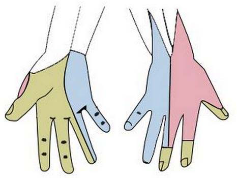
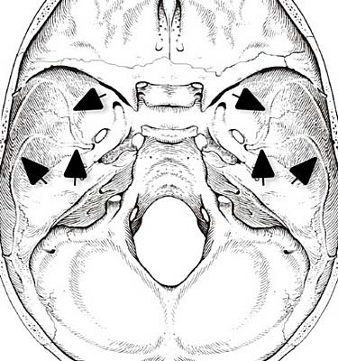
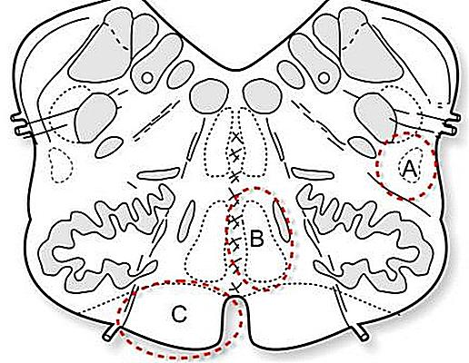
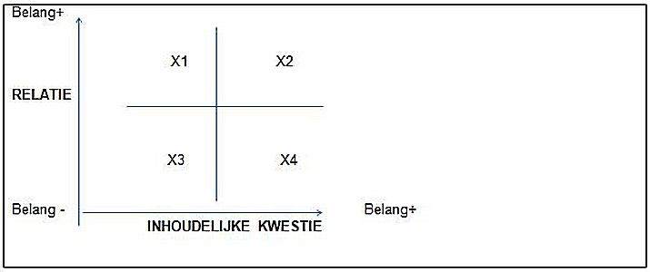
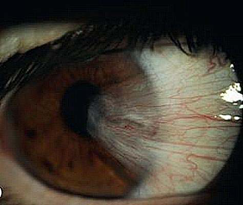
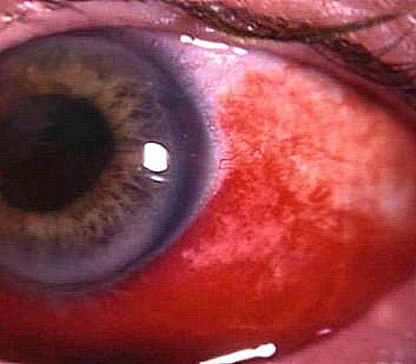
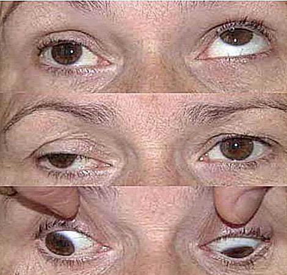

Vraag 1
Een 80-jarige vrouw gebruikt medicatie voor het multipele myeloom (ziekte van Kahler) waaraan zij lijdt. Omdat deze medicatie polyneuropathie kan veroorzaken wordt zij hier af en toe op getest. Welke bevindingen bij neurologisch onderzoek van deze patiënte verhogen de kans op polyneuropathie niet of nauwelijks en welke juist sterk?
afwezige Achillespeesreflexen
afwezige kniepeespeesreflexen
verminderde vibratiezin aan de handen
verminderde vibratiezin aan de voeten
Vraag 2
Een 21-jarige man is opgenomen in een instelling voor epilepsie en krijgt daar een epileptische aanval met bewustzijnsverlies en ritmische trekkingen van alle ledematen, die inmiddels vijf minuten duurt.
Welke handelwijze is nu de beste?
Vraag 3
De 15-jarige Clemens heeft de ochtend na een schoolfeestje een epileptische aanval met gegeneraliseerde trekkingen en bewustzijnsverlies. Dit heeft hij nooit eerder gehad, maar wel liet hij de laatste maanden bij het tandenpoetsen in de ochtend al twee keer ineens zijn tandenborstel vallen en bij het ontbijt een keer een kop thee.
Aan welk type epilepsie lijdt Clemens het meest waarschijnlijk?
Vraag 4
Een 52 jaar oude man is bij het hardlopen gestruikeld en met zijn hoofd tegen een muur gevallen. Hij is niet buiten kennis geweest en heeft erna lichte hoofdpijn. Bij algemeen lichamelijk en neurologisch onderzoek op de SEH worden behalve een bult rechts pariëtaal geen afwijkingen gevonden. Hij is gezond, maar heeft de dag voor het ongeval vrij veel diclofenac gebruikt wegens rugklachten.
Welke aanvullende diagnostiek en controles zijn nu geïndiceerd?
Vraag 5
Een 79-jarige man heeft sinds twee dagen een compleet mediainfarct rechts, waarna hij hemiplegisch is gebleven. Hij heeft een stenose van 90% van de arteria carotis interna rechts en 50% links. Behandeling met een plaatjesaggregatieremmer is al ingesteld.
Wat is nu de beste behandeling van de stenoses?
Vraag 6
Een 66 jaar oude vrouw heeft in vier dagen tweemaal een enkele minuten durende verlamming van de linkerarm gehad en tweemaal van de rechterarm.
Wat is de meest waarschijnlijke oorzaak van deze verschijnselen?
Vraag 7
Een 20-jarige studente wordt ziek tijdens een wandelvakantie. Zij heeft veel hoofdpijn. Haar temperatuur is 38,8 ºC. Zij bezoekt een lokaal ziekenhuis, waar de arts behalve meningeale prikkeling geen afwijkingen bij algemeen en neurologisch onderzoek vindt. In de liquor worden 4000 leukocyten/mm3 gevonden (normaal <4), glucose 0,7 mmol/l (in bloed 6,3 mmol/l) en eiwit 1,1 gram/l (normaal <0,5).
Welke behandeling is nu het beste?
Vraag 8
Een 65-jarige man heeft sinds twee uur last van continu aanwezige draaiduizeligheid en braken, zo ernstig dat de huisarts hem thuis moet bezoeken. De patiënt heeft geen last van oorsuizen of andere geluiden in het oor. Behalve een derdegraads nystagmus vindt de huisarts geen afwijkingen bij onderzoek.
Welke diagnose past het best bij deze klachten en bevindingen?
Vraag 9
Een 26-jarige man wordt door zijn huisarts op de spoedeisende hulp gepresenteerd wegens verdenking bacteriële meningitis. De klinische presentatie op de spoedeisende hulp blijkt hiervoor inderdaad zeer verdacht. De situatie verslechtert snel met een dalend bewustzijn en een pupilanisocorie.
Wat moet nu als eerste gebeuren?
Vraag 10
Een man arriveert met een verlaagd bewustzijn op de spoedeisende hulp na een ongeval met schedel-hersenletsel. Hij opent de ogen op een pijnprikkel, niet op luid aanspreken. Opdrachten voert hij niet uit, op een pijnprikkel lokaliseert hij met de linkerarm, terwijl de rechterarm een abnormale buigbeweging maakt. Daarbij roept hij ‘ik weet je te vinden’ en ‘blijf van me af jij’, maar een conversatie is niet mogelijk en hij geeft geen antwoord op vragen.
Wat is de uitkomst van de Glasgow Coma Score?
Vraag 11
Een patiënt bezoekt de arts vanwege een klapvoet. Behalve zwakte van de voetheffers vindt de arts geen paresen, ook niet bij testen van de inversie van de voet.
In welke perifere zenuw of wortel moet het probleem gelokaliseerd worden?
Vraag 12
Deficiëntie van welk vitamine kan behalve een polyneuropathie ook een myelopathie veroorzaken?
Vraag 13
Een patiënt heeft het typische beeld van een linkszijdige nervus oculomotoriusuitval, behalve dat de pupil isocoor is en normale lichtreacties vertoont.
Welke oorzaak van de uitval is nu het meest waarschijnlijk?
Vraag 14
Een 77-jarige man heeft bemerkt dat hij met de rechterhand niet goed meer de knoopjes van zijn overhemd kan openen en sluiten. Bij onderzoek is er enige atrofie van de rechterhand en zijn er fasciculaties in armen en benen. De reflexen zijn aan de benen zeer levendig. De sensibiliteit is intact.
Welke aandoening verklaart deze klachten en verschijnselen het best?
Vraag 15
Een 23-jarige vrouw heeft sinds enkele maanden last van dubbelzien en onduidelijk spreken. Dit is niet continu aanwezig, maar vooral ‘s avonds. Bij neurologisch onderzoek op de polikliniek zijn er geen afwijkingen.
Wat is met deze gegevens de meest waarschijnlijke diagnose?
Vraag 16
Een 67-jarige vrouw wordt geanalyseerd wegens een myocardinfarct. Als risicofactoren blijkt zij een niet eerder ontdekte diabetes en hypertensie te hebben. Een maand later wordt er bij haar bloed afgenomen en blijkt haar creatinekinase (CK) duidelijk verhoogd.
Welk van de aan haar voorgeschreven middelen is hiervan de meest waarschijnlijke oorzaak?
Vraag 17

Welke kleur past bij welke zenuw? (Bron: Emmedonline.com)
Sleep een optie naar de bijbehorende rij, of tik eerst op een kaart en dan op een rij.
blauw
Sleep hier naartoe
groen
Sleep hier naartoe
roze
Sleep hier naartoe
Vraag 18
Welk eiwit hoort bij welke ziekte?
Sleep een optie naar de bijbehorende rij, of tik eerst op een kaart en dan op een rij.
amyotrofe laterale sclerose (ALS)
Sleep hier naartoe
ziekte van Alzheimer
Sleep hier naartoe
ziekte van Creutzfeldt-Jakob
Sleep hier naartoe
ziekte van Parkinson
Sleep hier naartoe
Vraag 19
Een patiënt met matig ernstige ziekte van Alzheimer had enige baat bij het gebruik van rivastigmine, maar moest de behandeling staken wegens aanhoudende buikkrampen en diarree. U wilt een andere behandeling geven.
Welk middel heeft dan de minste kans op deze bijwerking?
Vraag 20
Een 76-jarige vrouw is door de huisarts verwezen naar de neuroloog wegens verdenking Ziekte van Parkinson. Zij was altijd gezond, alleen het laatste jaar brak zij achtereenvolgens de linker- en rechterpols bij verschillende valpartijen. Bij neurologisch onderzoek valt naast een symmetrisch parkinsonisme op dat patiënte niet op verzoek naar beneden kan kijken.
Welke andere diagnose dan Ziekte van Parkinson moet nu worden overwogen?
Vraag 21
Een 37-jarige vrouw heeft recent de diagnose MS gekregen, nadat zij vorig jaar een neuritis optica doormaakte, en een maand geleden een twee weken durende episode met gnostische sensibiliteitsstoornissen van de onderbenen. Gelukkig zijn beide episodes goed hersteld. Haar neuroloog wil een behandeling starten om nieuwe klinische exacerbaties en nieuwe demyelinisatiehaarden in hersenen en ruggenmerg zoveel mogelijk te voorkomen.
Welke behandeling is in deze omstandigheden aangewezen?
Vraag 22
De prognose van de verschillende types primaire hersentumoren verschillen sterk.
Welk type primaire hersentumor heeft de slechtste prognose?
Vraag 23
Wat is op het niveau van genproducten het onderliggende mechanisme bij de meeste autosomaal dominante spinocerebellaire ataxieën?
Vraag 24
Een 26-jarige vrouw zag een jaar geleden wazig met het rechteroog. Dat bleek toen te berusten op een neuritis optica, die spontaan herstelde. Er werd destijds een MRI-scan gemaakt, waarop periventriculaire, juxtacorticale en infratentoriële lesies werden gezien. Er kon toen geen dissociatie in tijd worden aangetoond. Inmiddels heeft de patiënt geen nieuwe klachten en is ook een nieuwe MRI-scan onveranderd.
Wat is nu de meest passende diagnose?
Vraag 25
De Ziekte van Parkinson kan behandeld worden met levodopa en dopamineagonisten. In verschillende situaties kan voor één van beide middelen gekozen worden.
Wat is een voordeel van dopamineagonisten boven levodopa?
Vraag 26
Behandeling met riluzol kan het beloop van amyotrofe laterale sclerose (ALS) in geringe mate gunstig beïnvloeden.
Via beïnvloeding van welk neurotransmittersysteem wordt dit effect waarschijnlijk bereikt?
Vraag 27
Een patiënt klaagt over uitstralende pijn vanuit de rug via de laterale voorzijde van het bovenbeen tot iets voorbij de knie. Vandaar geen verdere uitstraling naar caudaal.
Welk onderzoek moet nu verricht worden om radiculaire prikkeling te testen?
Vraag 28
Govert is 27 jaar oud en heeft sinds drie jaar een paar keer een episode van weken gehad waarin veel hoofdpijnaanvallen optraden. De aanvallen duren meestal 30-40 minuten, waarbij hij niet op bed gaat liggen, maar het liefst rondloopt. Geen last van licht of geluid. De hoofdpijn zit vrijwel altijd achter het rechter oog en is stekend van aard. Hij moet eigenlijk nooit overgeven. Hij heeft voorafgaande aan de hoofdpijn geen bijzondere verschijnselen bemerkt maar tijdens de hoofdpijn heeft hij een rood en wat tranend rechteroog. Tijdens de hoofdpijnaanvallen neemt hij vaak paracetamol met matig effect.
Wat is de meest waarschijnlijke diagnose?
Vraag 29
Een 66 jaar oude vrouw heeft sinds weken dagelijks tientallen hevige pijnscheuten ter hoogte van de rechter neusvleugel. Ter plekke is niets te zien, ook niet aan de binnenzijde van de neus, waar een KNO-arts een inspectie heeft uitgevoerd. Zij heeft het idee dat aanraken en praten de pijnscheuten, die enkele seconden duren, kunnen uitlokken. Carbamazepine en fenytoïne hebben geen enkel effect gehad en de klachten nemen zodanig toe dat patiënte ook bij het eten pijnscheuten krijgt en begint af te vallen.
Welke niet-medicamenteuze behandeling heeft bij dit klachtenpatroon de grootste kans op succes?
Vraag 30
In bovenstaande figuur is met pijlen de impressie van een arterie in het bot aangegeven. (Bron: Anatomie en neurowetenschappen)
Om welke arterie gaat het?

Vraag 31
Kies de juiste alternatieven.
Geef aan welke doorgang de verschillende onderdelen van het ventrikelsysteem met elkaar verbindt. De laterale ventrikel staat in verbinding met de derde ventrikel via . En de derde ventrikel staat in verbinding met de vierde ventrikel via .
Vraag 32
Bovenstaande afbeelding toont een schematische weergave van een doorsnede door het myelencephalon. De gebieden aangeduid met A, B en C bevatten belangrijke baansystemen. (Bron: Anatomie en Neurowetenschappen)
Welk anatomische gebied is beschadigd wanneer zich hemiparetische of hemiplegische verschijnselen voordoen?

Vraag 33
De basale ganglia bevatten verschillende circuits waaronder de zogenaamde ‘indirecte pathway’.
Welke vier onderstaande basale ganglia structuren worden tot deze neuronale pathway gerekend?
Meerdere antwoorden mogelijk.
Vraag 34

Kies bij de vier manieren om conflicten over verschil van mening te hanteren de juiste positie in de tabel.
Sleep een optie naar de bijbehorende rij, of tik eerst op een kaart en dan op een rij.
opgeven
Sleep hier naartoe
opleggen
Sleep hier naartoe
overleggen
Sleep hier naartoe
toegeven
Sleep hier naartoe
Vraag 35
Tijdens de heteroanamnese is de patiënt er normaal gesproken niet bij.
Vraag 36
Als er tijdens een driegesprek sprake is van een dominante gesprekspartner dient de arts deze zo weinig mogelijk gesprekstijd te geven om meer ruimte te laten voor de patiënt.
Vraag 37
Op een CT beeld ziet u een weefselgebied met Hounsfield waarde nul.
Wat concludeert u over dit weefsel?
Vraag 38
Single Photon Emission Computed Tomography (SPECT) scans zijn een vorm van functionele beeldvorming, die bij de diagnose van sommige neurologische aandoeningen een aanvullende waarde kunnen hebben.
Bij welke neurologische aandoeningen wordt momenteel in de klinische praktijk soms gebruik gemaakt van SPECT scans?
Vraag 39
Kenmerkend voor een RAPD (relatief afferent pupil defect) is dat bij de ‘swinging flash light test’ de pupil van het aangedane oog:
Vraag 40
Het principe van registratie van VEPs (visually evoked potentials) berust op:
Vraag 41
Bij een wakker proefpersoon die ontspannen is en de ogen gesloten houdt wordt een EEG meting verricht waarbij de elektrodes zijn aangebracht op de hoofdhuid op de positie van de occipitale schors. Op het moment dat de proefpersoon de ogen opent, neemt de frequentie van de signalen toe en wordt de amplitude lager.
Dit wordt vooral veroorzaakt door:
Vraag 42
Welk aanvullend onderzoek geeft welke informatie met betrekking tot de gezichtsvelden? Kies de juiste onderzoeksmethode bij de juiste test.
Sleep een optie naar de bijbehorende rij, of tik eerst op een kaart en dan op een rij.
centraal gezichtsveld
Sleep hier naartoe
confrontatief gezichtsveld
Sleep hier naartoe
kinetische perimetrie
Sleep hier naartoe
statische perimetrie
Sleep hier naartoe
Vraag 43
Op het spreekuur komt vervroegd de heer T, 73 jaar, i.v.m. uitstralende pijn aan zijn linkeroog. Hij is misselijk. Hij komt elk kwartaal voor controle van zijn matig gereguleerde bloeddruk en DM II. Zijn visus links bedraagt 3/60.
Wat is de meest waarschijnlijke diagnose?
Vraag 44
Mevrouw K, 48jr, komt bij u met de klacht dat zij sinds enkele weken af en toe tegen iets aanloopt en onzeker in het verkeer is. Als zij ingehaald wordt, schrikt zij. Zij kan niet aangeven hoe lang de klachten bestaan. Zij heeft geen flitsen bemerkt. Haar algemene voorgeschiedenis is blanco. Zij heeft een leesbril.
Wat is de meest waarschijnlijke diagnose?
Vraag 45
Welke behandeling is aangewezen bij het bovenstaande beeld? (Bron: Oogheelkunde)

Vraag 46
De heer T, 86 jaar komt ongerust op het spreekuur van de huisarts met een rood oog sinds 1 dag. (Bron: Oogheelkunde)
Welke behandeling is het beste?

Vraag 47
Kies bij de verschillende oorzaken van letsel de juiste oogheelkundige structuur aan die betrokken is bij de schade.
Sleep een optie naar de bijbehorende rij, of tik eerst op een kaart en dan op een rij.
actinisch letsel
Sleep hier naartoe
chemisch letsel
Sleep hier naartoe
thermisch letsel
Sleep hier naartoe
Vraag 48
Als er met de stenopeïsche opening verbetering van de visus optreedt dan is er sprake van:
Vraag 49
Wat is de meest waarschijnlijke diagnose bij een fotofobe baby van 6 maanden met tranende ogen en mat aspect van de cornea?
Vraag 50
Wat is een oorzaak van trichiasis?
Vraag 51
Op de SEH komt mevrouw B. met een rood pussend en pijnlijk rechteroog.
Wat is de meest waarschijnlijke oorzaak van haar klachten?
Vraag 52
Welke bewering is juist met betrekking tot het gezichtsveld bij glaucoom?
Vraag 53
Welke drie risicofactoren spelen een rol bij het ontwikkelen van cataract?
Meerdere antwoorden mogelijk.
Vraag 54
Hoeveel bedraagt de visus bij een arteriële vaatafsluiting meestal?
Vraag 55
Veel uveïtiden zijn geassocieerd met systeemziekten. Kies de juiste symptomen bij de oorzaak van de uveitis.
Sleep een optie naar de bijbehorende rij, of tik eerst op een kaart en dan op een rij.
bandkeratopathie
Sleep hier naartoe
ernstige occlusieve vasculitis
Sleep hier naartoe
focale chorioretinitis
Sleep hier naartoe
irisgranulomen
Sleep hier naartoe
sectoriële irisatrofie
Sleep hier naartoe
Vraag 56
Welke zenuw is aangedaan bij deze patiënt (rechts)? (Bron: Oogheelkunde)
